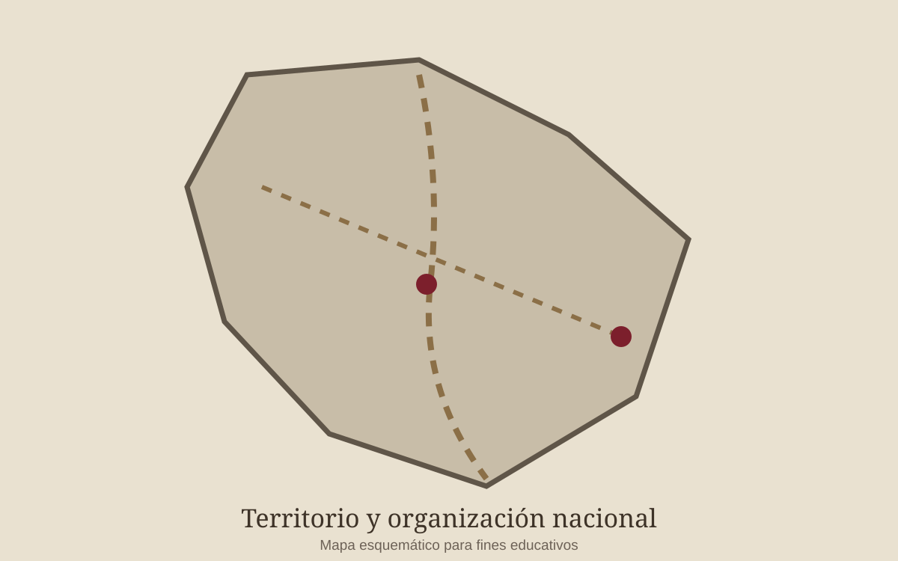
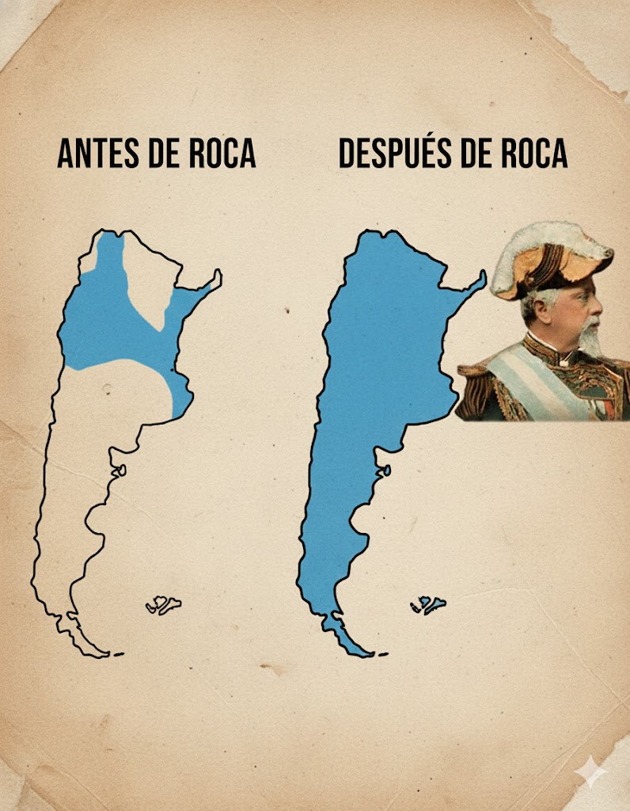

El problema territorial en el siglo XIX
Durante la segunda mitad del siglo XIX, el Estado argentino buscó ampliar su control efectivo sobre regiones que estaban fuera de su administración. En ese proceso se produjeron campañas militares y negociaciones que afectaron profundamente a los pueblos originarios que habitaban esos territorios.
Roca fue una figura central de este proceso. En 1879 dirigió la campaña que avanzó hacia el Río Negro. La historiografía tradicional la llamó “Conquista del Desierto”, mientras que estudios actuales también analizan el proceso desde la perspectiva de los pueblos originarios y sus consecuencias.

Línea de acontecimientos vinculados con territorio y fronteras
1878
Roca asume como ministro de Guerra y se impulsa una nueva estrategia para extender el control estatal hacia el sur.
1879
Roca dirige la expedición hacia el Río Negro. El proceso modifica el control territorial y produce graves consecuencias para comunidades indígenas.
1884
Se reorganizan diversos territorios nacionales bajo administración del Estado.
1902
Argentina y Chile firman los Pactos de Mayo, vinculados con la solución pacífica de disputas fronterizas.
Lugares históricos y memoria
- Río Negro: espacio central de la campaña militar de 1879.
- Buenos Aires: centro político desde donde se definieron políticas nacionales.
- Tucumán: ciudad natal de Roca.
- Museo Histórico Nacional: conserva objetos y obras vinculadas con la historia de este período.
- Museo Casa Rosada: reúne material sobre la trayectoria presidencial de Roca.
Recurso visual
Esta imagen es una recreación digital educativa realizada para acompañar el trabajo. No representa una fotografía histórica real.

Video de recreación digital
El siguiente recurso es un pequeño video generado para el trabajo, pensado como recreación visual y no como documento histórico.
¿Por qué sigue siendo un tema importante?
El debate territorial no terminó con las campañas militares. Actualmente se estudian las consecuencias de esas políticas sobre las comunidades indígenas, la construcción de fronteras y la forma en que la escuela y los monumentos representan el pasado.
← Volver a Inicio